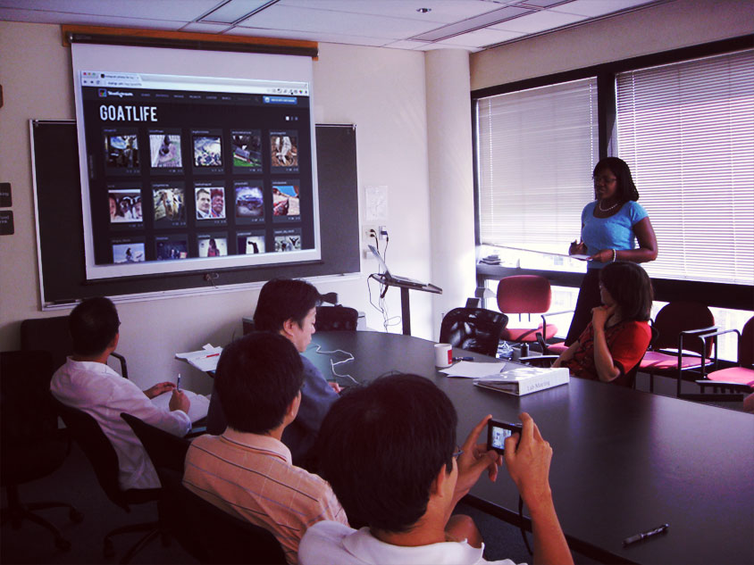

The best project ever?
Pictured: your ideal workstation.
You're presenting.
Pictured: the meeting room.
Source: neutronboy / Flickr
Agenda
- Accessibility Background
- The Deal with Web Components
- Stepping In to the Shadow DOM
- The Accessibility Situation
- Recap
We build stuff for people.
Traditional Accessibility
Who are we talking about?
- Blind & Low-Vision
- Deaf, Hard of Hearing
- Physical Disabilities
- Color-Blind
- Cognitive Impairments
Everyone.
Our User
Using Assistive Technology
- Stevie Wonder the Blind Goat
- Web browser
- Accessibility API
- Screen reader commands
- Voice output
In an Ideal World
Keyboard Access
- Good visual feedback
- Logical tab order
- Keyboard navigation everywhere
In an Ideal World
Screen Reader Access
- Meaningful page structure
- Attention to semantics
- Relevant non-visual content
- Usable without seeing
In an Ideal World
General Accessibility
- Good visual contrast ratios
- Make experiences interactive
- SEO & accessibility as BFFs
- Mobile accessibility (that's a thing!)
- Integrated with software testing
How's it going?
What are Web Components?
New standards moving through the W3C
- HTML Imports
- Templates
- Decorators
- Custom Elements
- Shadow DOM
Why are we excited about
Web Components?
- A new approach to HTML
- Less waiting for browsers
- Minimization of style & script conflicts
- ENCAPSULATION
What is the Shadow DOM?
- Encapsulates a DOM subtree
- Implementation vs. interface
- Shadowy organization
hell-bent on world domination
What is the Shadow DOM?
You've seen it already:
HTML5 video, input text, range, textarea

Visible in latest Chrome, Firefox & Opera Dev Tools
Understanding Shadow DOM
- DOM - an object-oriented tree representation of an HTML document.
- Node - a component of a tree. Nested node groups are called node trees or subtrees.
- Shadow host - an element hosting one or more Shadow DOM node trees.
- Shadow tree - a node tree hosted by a shadow host.
- Shadow root - the root node of a shadow tree.
Trees resemble nature
Source: Simply Scheme, Chapter 18: Trees
Shadow DOM in Action
How do I Shadow DOM?
var template = document.querySelector('template'),
goatComponent = Object.create(HTMLElement.prototype);
goatComponent.createdCallback = function() {
var shadowRoot = this.createShadowRoot(),
clone = template.content.cloneNode(true);
shadowRoot.appendChild(clone);
template.remove();
};
document.registerElement("goat-stuff", {
prototype: goatComponent
});
About that boundary...
// get rid of anything inherited
shadowRoot.resetStyleInheritance = true;
// let CSS cascade into boundary
shadowRoot.applyAuthorStyles = true;

Shadow DOM, keyboards and
screen readers
(and other Assistive Technology)
It worked!
why?
Trees “as rendered”
- Web browser parses HTML, creates objects from markup
- DOM altered by CSS, JS and ARIA
- Web Components create a container and child elements as a subtree
- Screen reader makes use of objects in rendered DOM
- "Acccessibility Tree" presented to screen reader user
So, how do I make accessible Web Components?
Write accessible code.
Accessible code
- Native, semantic HTML
- Readable text content
- Provide all the feedback
- Focus management
- Use ARIA to fill in gaps
Web Component DEMO!
Recap
- Develop for the ideal
- Web Components are for encapsulation
- Shadow DOM is accessible
- Screen readers utilize DOM as rendered
- Pick the right technology for your audience
Nailed it.
Source: neutronboy / Flickr
Resources
Current Support
- Native implementation: Chrome, Firefox, Safari 6+, Mobile Safari
- Polyfill: Chrome, Firefox, IE10+, Safari 6+, Mobile Safari

Read more: polymer-project.com